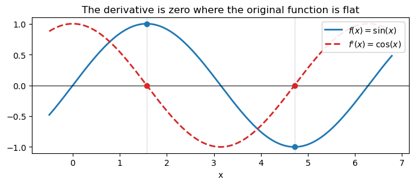
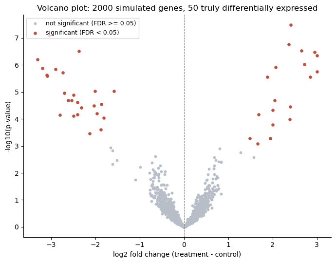

import math
import warnings
warnings.filterwarnings('ignore')
import numpy as np
import torch
import matplotlib.pyplot as plt
from scipy import stats
torch.manual_seed(0)<torch._C.Generator at 0x7b6b0459fb30>This notebook checks the worked examples and practice problems of the Session 1 page in code, in the same order as the page. It introduces no new ideas; Session 2 is where the code side of the course starts properly. Read the page first, work the practice problems by hand, then run the cells to check.
The three parts follow the page:
import math
import warnings
warnings.filterwarnings('ignore')
import numpy as np
import torch
import matplotlib.pyplot as plt
from scipy import stats
torch.manual_seed(0)<torch._C.Generator at 0x7b6b0459fb30>A vector is an ordered list of numbers; its length (norm) is \(\lVert \mathbf{v} \rVert = \sqrt{v_1^2 + \dots + v_n^2}\).
v = torch.tensor([3., 4.])
print("||(3, 4)|| =", torch.linalg.vector_norm(v).item())
# Practice problem 1a: length of (1, 2, 2)
print("practice problem 1a:", torch.linalg.vector_norm(torch.tensor([1., 2., 2.])).item())||(3, 4)|| = 5.0
practice problem 1a: 3.0The number of entries of a vector is its dimension; a matrix has a shape (rows, columns). In code, .shape tells you, and checking it is the habit that prevents most errors.
composition = torch.rand(20) # amino acid composition of one protein
print("one protein's composition: dimension", composition.shape[0])
expression = torch.rand(50, 20000) # 50 samples x 20,000 genes
print("expression matrix shape:", tuple(expression.shape),
"-> row = one sample, column = one gene")
X = torch.rand(1000, 20) # 1,000 proteins x 20 features
print("protein feature matrix X:", tuple(X.shape))
batch = torch.zeros(32, 100, 20) # 32 sequences x 100 positions x 20 amino acids (one-hot)
print("a batch of one-hot sequences is a 3D tensor:", tuple(batch.shape))one protein's composition: dimension 20
expression matrix shape: (50, 20000) -> row = one sample, column = one gene
protein feature matrix X: (1000, 20)
a batch of one-hot sequences is a 3D tensor: (32, 100, 20)\(\mathbf{w} \cdot \mathbf{x} = w_1 x_1 + \dots + w_n x_n\): multiply corresponding entries and add. Its sign follows the angle between the vectors.
w = torch.tensor([2., -1.])
x = torch.tensor([1., 4.])
print("(2, -1) . (1, 4) =", torch.dot(w, x).item())
angle = torch.rad2deg(torch.arccos(torch.dot(w, x) / (torch.linalg.norm(w) * torch.linalg.norm(x))))
print(f"angle between them: {angle.item():.0f} degrees (past 90, so the dot product is negative)")
# Practice problem 2
print("practice problem 2:", torch.dot(torch.tensor([2., -1., 3.]), torch.tensor([1., 4., 0.])).item())(2, -1) . (1, 4) = -2.0
angle between them: 103 degrees (past 90, so the dot product is negative)
practice problem 2: -2.0A matrix–vector product is a batch of dot products, one per row. The rule: \((n \times m)(m \times k) \rightarrow (n \times k)\); the inner dimensions must match.
M = torch.tensor([[2., -1.], [0., 3.]])
x = torch.tensor([1., 4.])
print("M @ x =", M @ x)M @ x = tensor([-2., 12.])# Shapes: 1,000 proteins x 20 features, and a classifier with 20 weights
X = torch.rand(1000, 20) # e.g. amino acid composition of 1,000 proteins
w = torch.randn(20)
scores = X @ w
print("X:", tuple(X.shape), " w:", tuple(w.shape), " X @ w:", tuple(scores.shape), "-> one score per protein")
W = torch.randn(20, 3) # three classes: three weight vectors side by side
print("W:", tuple(W.shape), " X @ W:", tuple((X @ W).shape), "-> three scores per protein")
print("X.T:", tuple(X.T.shape), " X.T @ X:", tuple((X.T @ X).shape))
# The most common error: the inner dimensions do not match
try:
X @ torch.randn(21)
except RuntimeError as e:
print("X @ (21 weights) fails:", e)X: (1000, 20) w: (20,) X @ w: (1000,) -> one score per protein
W: (20, 3) X @ W: (1000, 3) -> three scores per protein
X.T: (20, 1000) X.T @ X: (20, 20)
X @ (21 weights) fails: size mismatch, got input (1000), mat (1000x20), vec (21)# Worked example: three proteins, two features, w = (2, -1)
X3 = torch.tensor([[0.5, 0.1], [0.2, 0.4], [0.3, 0.3]])
print("X @ w =", X3 @ torch.tensor([2., -1.]))
print("X transposed:\n", X3.T)
# Practice problem 4: shapes for a 500 samples x 20 genes matrix
X4 = torch.rand(500, 20); u = torch.rand(500)
print("\npractice problem 4:", tuple(X4.shape), tuple((X4 @ torch.rand(20)).shape),
tuple(X4.T.shape), tuple((X4.T @ X4).shape), " X.T @ u:", tuple((X4.T @ u).shape))
# Practice problem 5
X5 = torch.tensor([[1., 0., 2.], [0., 1., 1.]])
print("practice problem 5: X @ w =", X5 @ torch.tensor([1., 2., 3.]), "\n X.T =\n", X5.T)
# (AB)^T = B^T A^T
A_ = torch.randn(4, 3); B_ = torch.randn(3, 2)
print("(AB).T equals B.T @ A.T:", torch.allclose((A_ @ B_).T, B_.T @ A_.T))X @ w = tensor([0.9000, 0.0000, 0.3000])
X transposed:
tensor([[0.5000, 0.2000, 0.3000],
[0.1000, 0.4000, 0.3000]])
practice problem 4: (500, 20) (500,) (20, 500) (20, 20) X.T @ u: (20,)
practice problem 5: X @ w = tensor([7., 5.])
X.T =
tensor([[1., 0.],
[0., 1.],
[2., 1.]])
(AB).T equals B.T @ A.T: TrueDividing by the length gives a unit vector. The same length formula, applied to all entries of a matrix, gives the Frobenius norm.
w = torch.tensor([2., -1.])
w_hat = w / torch.linalg.norm(w)
print("||w|| =", round(torch.linalg.norm(w).item(), 3), " unit vector:", w_hat,
" its length:", torch.linalg.norm(w_hat).item())
# Practice problem 3: normalise (3, 4)
v = torch.tensor([3., 4.])
print("practice problem 3:", v / torch.linalg.norm(v))
# Practice problem 1b: Frobenius norm of the 2x2 identity matrix
print("practice problem 1b:", torch.linalg.matrix_norm(torch.eye(2), ord="fro").item())||w|| = 2.236 unit vector: tensor([ 0.8944, -0.4472]) its length: 0.9999999403953552
practice problem 3: tensor([0.6000, 0.8000])
practice problem 1b: 1.4142135381698608No hand calculation: torch.linalg.eigh (or np.linalg.eigh) finds eigenvalues and eigenvectors, and we check \(A\mathbf{v} = \lambda\mathbf{v}\). PCA uses the eigenvectors of a covariance matrix \(X^\top X/(n-1)\).
# Eigenvalues/eigenvectors of a symmetric 2x2 matrix, found by the computer
A = torch.tensor([[2., 1.], [1., 2.]])
eigvals, eigvecs = torch.linalg.eigh(A)
print("eigenvalues:", eigvals)
print("eigenvectors (columns):\n", eigvecs)
# check: A @ v should equal eigenvalue * v for each eigenvector
for i in range(2):
v = eigvecs[:, i]
lam = eigvals[i]
print(f"A @ v = {A @ v}, lambda * v = {lam * v}")
# Practice problem 6: (1, -1) is an eigenvector with eigenvalue 1
v6 = torch.tensor([1., -1.])
print("\npractice problem 6: A @ (1,-1) =", A @ v6)eigenvalues: tensor([1., 3.])
eigenvectors (columns):
tensor([[-0.7071, 0.7071],
[ 0.7071, 0.7071]])
A @ v = tensor([-0.7071, 0.7071]), lambda * v = tensor([-0.7071, 0.7071])
A @ v = tensor([2.1213, 2.1213]), lambda * v = tensor([2.1213, 2.1213])
practice problem 6: A @ (1,-1) = tensor([ 1., -1.])# PCA in miniature: 200 samples of two correlated features
rng = np.random.default_rng(0)
x1 = rng.normal(size=200)
data = np.column_stack([x1, 0.8 * x1 + 0.3 * rng.normal(size=200)])
data = data - data.mean(axis=0) # centre the columns
cov = data.T @ data / (len(data) - 1) # (2 x 200)(200 x 2) -> (2 x 2)
vals, vecs = np.linalg.eigh(cov)
print("covariance matrix:\n", cov.round(3))
print("first principal component (largest eigenvalue):", vecs[:, -1].round(3),
f"explains {vals[-1] / vals.sum():.0%} of the variance")covariance matrix:
[[0.929 0.724]
[0.724 0.658]]
first principal component (largest eigenvalue): [-0.769 -0.639] explains 96% of the variancea = torch.tensor([2., -1., 3.])
b = torch.tensor([1., 4., 0.])
cross = torch.cross(a, b, dim=0)
print("a x b =", cross)
print("a . (a x b) =", torch.dot(a, cross).item(), " (should be 0 -- perpendicular to a)")
print("b . (a x b) =", torch.dot(b, cross).item(), " (should be 0 -- perpendicular to b)")
# Optional practice problem
a2 = torch.tensor([1., 2., 0.])
b2 = torch.tensor([0., 1., 3.])
print("\noptional practice, (1,2,0) x (0,1,3):", torch.cross(a2, b2, dim=0))a x b = tensor([-12., 3., 9.])
a . (a x b) = 0.0 (should be 0 -- perpendicular to a)
b . (a x b) = 0.0 (should be 0 -- perpendicular to b)
optional practice, (1,2,0) x (0,1,3): tensor([ 6., -3., 1.])Checked with SymPy, including the sigmoid’s derivative \(\sigma(z)(1-\sigma(z))\).
import sympy as sp
x_sym, z_sym = sp.symbols('x z')
print("d/dx(5) =", sp.diff(sp.Integer(5), x_sym))
print("d/dx(x**4) =", sp.diff(x_sym**4, x_sym))
print("d/dx(e**x) =", sp.diff(sp.exp(x_sym), x_sym))
print("d/dx(ln x) =", sp.diff(sp.log(x_sym), x_sym))
print("d/dx(sin x) =", sp.diff(sp.sin(x_sym), x_sym))
print("d/dx(cos x) =", sp.diff(sp.cos(x_sym), x_sym))
# Sigmoid derivative, verified against the closed form sigma(z)(1-sigma(z))
sigma = 1 / (1 + sp.exp(-z_sym))
dsigma = sp.diff(sigma, z_sym)
check = sp.simplify(dsigma - sigma * (1 - sigma))
print("sigmoid'(z) - sigma(z)(1-sigma(z)) simplifies to:", check, "(should be 0)")d/dx(5) = 0
d/dx(x**4) = 4*x**3
d/dx(e**x) = exp(x)
d/dx(ln x) = 1/x
d/dx(sin x) = cos(x)
d/dx(cos x) = -sin(x)
sigmoid'(z) - sigma(z)(1-sigma(z)) simplifies to: 0 (should be 0)The cheat-sheet figure: \(f(x)=\sin(x)\) and \(f'(x)=\cos(x)\); the derivative is zero at the peaks and troughs of \(f\).
import numpy as np
import matplotlib.pyplot as plt
xf = np.linspace(-0.5, 2 * np.pi + 0.5, 400)
f_vals = np.sin(xf)
fprime_vals = np.cos(xf)
fig, ax = plt.subplots(figsize=(7, 3.2))
ax.plot(xf, f_vals, label=r"$f(x)=\sin(x)$", color="#1f77b4", linewidth=2)
ax.plot(xf, fprime_vals, label=r"$f'(x)=\cos(x)$", color="#d62728", linewidth=2, linestyle="--")
ax.axhline(0, color="black", linewidth=0.7)
for xv in [np.pi / 2, 3 * np.pi / 2]:
ax.axvline(xv, color="gray", linewidth=0.6, linestyle=":")
ax.plot(xv, np.sin(xv), 'o', color="#1f77b4", zorder=5)
ax.plot(xv, 0, 'o', color="#d62728", zorder=5)
print(f"x={xv:.4f} f(x)={np.sin(xv):.4f} f'(x)={np.cos(xv):.6f}")
ax.set_xlabel("x")
ax.legend(loc="upper right", framealpha=0.9)
ax.set_title("The derivative is zero where the original function is flat")
plt.tight_layout()
plt.show()x=1.5708 f(x)=1.0000 f'(x)=0.000000
x=4.7124 f(x)=-1.0000 f'(x)=-0.000000
The gradient of \(f(x_0, x_1) = 3x_0^2 + 2x_0 x_1\) at \((1, 2)\), checked two ways: by hand, and by PyTorch’s automatic differentiation (the machinery Session 9’s backpropagation uses).
# f(x0, x1) = 3*x0**2 + 2*x0*x1, at the point (1, 2)
x0 = torch.tensor(1., requires_grad=True)
x1 = torch.tensor(2., requires_grad=True)
f = 3*x0**2 + 2*x0*x1
f.backward()
print("autograd gradient:", (x0.grad.item(), x1.grad.item()))
print("by-hand answer was: (10, 2) -- matches")autograd gradient: (10.0, 2.0)
by-hand answer was: (10, 2) -- matches\(x_{n+1} = x_n - \eta f'(x_n)\) on \(f(x) = (x-3)^2\) with \(\eta = 0.3\): the same table as on the page.
def f(x):
return (x - 3)**2
def fprime(x):
return 2*(x - 3)
x = 0.0
eta = 0.3
for n in range(4):
print(f"n={n} x_n={x:.3f} f(x_n)={f(x):.3f} f'(x_n)={fprime(x):.3f}")
x = x - eta * fprime(x)
print(f"n=4 x_n={x:.3f} (converging toward the true minimum at x=3)")n=0 x_n=0.000 f(x_n)=9.000 f'(x_n)=-6.000
n=1 x_n=1.800 f(x_n)=1.440 f'(x_n)=-2.400
n=2 x_n=2.520 f(x_n)=0.230 f'(x_n)=-0.960
n=3 x_n=2.808 f(x_n)=0.037 f'(x_n)=-0.384
n=4 x_n=2.923 (converging toward the true minimum at x=3)Integrating \(f'(x) = 2(x-3)\) recovers \(f(x) = (x-3)^2\) up to a constant, and the practice problem \(f(x) = 4x^3\).
fprime_expr = 2 * (x_sym - 3)
F = sp.integrate(fprime_expr, x_sym)
f_expr = (x_sym - 3)**2
print("f'(x) =", fprime_expr)
print("integral of f'(x) =", F)
print("F(x) - f(x) =", sp.simplify(F - f_expr), " (a constant -- integration recovers f(x) up to +C)")
# Practice problem check: f(x) = 4x^3
f2 = 4 * x_sym**3
f2prime = sp.diff(f2, x_sym)
F2 = sp.integrate(f2prime, x_sym)
print()
print("f(x) = 4x^3, f'(x) =", f2prime, ", integral of f'(x) =", F2)f'(x) = 2*x - 6
integral of f'(x) = x**2 - 6*x
F(x) - f(x) = -9 (a constant -- integration recovers f(x) up to +C)
f(x) = 4x^3, f'(x) = 12*x**2 , integral of f'(x) = 4*x**3For a fair die, and the 68-95-99.7 rule of the normal distribution.
outcomes = np.arange(1, 7)
mean = outcomes.mean()
var = ((outcomes - mean) ** 2).mean()
print("E[X] =", mean, " Var(X) =", round(var, 3), "(= 35/12) sigma =", round(var ** 0.5, 3))
for k in [1, 2, 3]:
p = stats.norm.cdf(k) - stats.norm.cdf(-k)
print(f"fraction of a normal distribution within {k} sigma: {p:.1%}")E[X] = 3.5 Var(X) = 2.917 (= 35/12) sigma = 1.708
fraction of a normal distribution within 1 sigma: 68.3%
fraction of a normal distribution within 2 sigma: 95.4%
fraction of a normal distribution within 3 sigma: 99.7%The page’s worked example (Pearson against Spearman when one value is extreme), and the U-shaped case where both are zero.
mrna = [1, 2, 3, 4, 100]
protein = [2, 4, 6, 8, 10]
r, p_r = stats.pearsonr(mrna, protein)
rho, p_rho = stats.spearmanr(mrna, protein)
print(f"Pearson r = {r:.2f} Spearman rho = {rho:.2f}")
print(f"with 5 instead of 100: Pearson r = {stats.pearsonr([1, 2, 3, 4, 5], protein)[0]:.2f}")
# Spearman is Pearson on the ranks
ranks = stats.rankdata(mrna)
print("ranks of the mRNA levels:", ranks, "-> Pearson on ranks =", round(stats.pearsonr(ranks, protein)[0], 2))
# A U-shaped relationship: strong, but neither coefficient sees it
x = np.linspace(-3, 3, 7)
print(f"y = x^2: Pearson r = {stats.pearsonr(x, x**2)[0]:.2f}, Spearman rho = {stats.spearmanr(x, x**2)[0]:.2f}")Pearson r = 0.72 Spearman rho = 1.00
with 5 instead of 100: Pearson r = 1.00
ranks of the mRNA levels: [1. 2. 3. 4. 5.] -> Pearson on ranks = 1.0
y = x^2: Pearson r = 0.00, Spearman rho = 0.00\(P(A \mid B) = P(A \text{ and } B)/P(B)\): restrict to the cases where \(B\) holds. Checked exactly and by simulating half a million rolls, then the membrane-protein example, where the direction of conditioning matters.
conditioned = outcomes[outcomes > 3]
print("P(even | X > 3) exact: ", np.mean(conditioned % 2 == 0), "= 2/3")
rng = np.random.default_rng(0)
rolls = rng.integers(1, 7, size=500_000)
print("P(even | X > 3) simulated: ", round(np.mean(rolls[rolls > 3] % 2 == 0), 4))P(even | X > 3) exact: 0.6666666666666666 = 2/3
P(even | X > 3) simulated: 0.6658# The direction matters: membrane proteins and signal peptides (200 proteins)
membrane, sp_in_membrane, sp_in_other, total = 60, 30, 20, 200
print("P(signal peptide | membrane) =", sp_in_membrane / membrane)
print("P(membrane | signal peptide) =", sp_in_membrane / (sp_in_membrane + sp_in_other))
print("practice problem 1: P(signal peptide | not membrane) =", round(sp_in_other / (total - membrane), 3))P(signal peptide | membrane) = 0.5
P(membrane | signal peptide) = 0.6
practice problem 1: P(signal peptide | not membrane) = 0.143The diagnostic test from the page’s optional box, first by Bayes’ rule, then by counting 100,000 people.
prevalence, sensitivity, false_positive_rate = 0.01, 0.95, 0.05
p_positive = sensitivity * prevalence + false_positive_rate * (1 - prevalence)
print(f"Bayes' rule: P(disease | positive) = {sensitivity * prevalence / p_positive:.3f}")
n = 100_000
sick, healthy = prevalence * n, (1 - prevalence) * n
true_pos, false_pos = sensitivity * sick, false_positive_rate * healthy
print(f"counting: {true_pos:.0f} true positives / {true_pos + false_pos:.0f} positives = {true_pos / (true_pos + false_pos):.3f}")Bayes' rule: P(disease | positive) = 0.161
counting: 950 true positives / 5900 positives = 0.161Products of many probabilities underflow to zero; sums of their logs do not. A log-odds score compares a model with a background, position by position. The same logs give the volcano plot’s \(-\log_{10}(p)\), and the sigmoid turns a log-odds back into a probability.
print("0.25**1000 =", 0.25 ** 1000, " (rounds to zero)")
print("1000*log10(0.25) =", round(1000 * math.log10(0.25), 1))
print("log(3) + log(7) =", round(math.log(3) + math.log(7), 6), " log(3*7) =", round(math.log(21), 6))
# Log-odds of GCGCAT: GC-rich model (G, C 0.35; A, T 0.15) against a uniform background, in bits
model = {"G": 0.35, "C": 0.35, "A": 0.15, "T": 0.15}
def log_odds(seq):
return sum(math.log2(model[b] / 0.25) for b in seq)
S = log_odds("GCGCAT")
print(f"\nS(GCGCAT) = {S:.2f} bits -> {2 ** S:.2f} times more likely under the GC-rich model")
print(f"practice problem 3: S(AT) = {log_odds('AT'):.2f} bits (favours the background)")
# -log10(p) on a volcano plot
print("\n-log10(0.001) =", -math.log10(0.001), " practice problem 5: -log10(1e-6) =", -math.log10(1e-6))
# The sigmoid undoes a natural log-odds
def sigmoid(z):
return 1 / (1 + math.exp(-z))
print("\nsigmoid(ln(0.8 / 0.2)) =", round(sigmoid(math.log(0.8 / 0.2)), 6), "(back to p = 0.8)")
for z in [-5, 0, 5]:
print(f"sigmoid({z}) = {sigmoid(z):.4f}")0.25**1000 = 0.0 (rounds to zero)
1000*log10(0.25) = -602.1
log(3) + log(7) = 3.044522 log(3*7) = 3.044522
S(GCGCAT) = 0.47 bits -> 1.38 times more likely under the GC-rich model
practice problem 3: S(AT) = -1.47 bits (favours the background)
-log10(0.001) = 3.0 practice problem 5: -log10(1e-6) = 6.0
sigmoid(ln(0.8 / 0.2)) = 0.8 (back to p = 0.8)
sigmoid(-5) = 0.0067
sigmoid(0) = 0.5000
sigmoid(5) = 0.9933\(L(p) = p^7 (1-p)^3\) for a fragment with 7 G/C out of 10 bases, and the maximum-likelihood value of \(p\).
# 7 G/C out of 10 bases: L(p) = p^7 (1-p)^3
def L(p, k=7, n=10):
return p ** k * (1 - p) ** (n - k)
print(f"L(0.5) = {L(0.5):.5f} L(0.7) = {L(0.7):.5f} ratio = {L(0.7) / L(0.5):.2f}")
grid = np.linspace(0.01, 0.99, 99)
print("p with the highest likelihood:", grid[np.argmax(L(grid))].round(2), "(the observed fraction 7/10)")
# Practice problem 2: 3 G/C out of 4 bases
print(f"practice problem 2: L(0.5) = {L(0.5, 3, 4):.4f}, L(0.75) = {L(0.75, 3, 4):.4f}")L(0.5) = 0.00098 L(0.7) = 0.00222 ratio = 2.28
p with the highest likelihood: 0.7 (the observed fraction 7/10)
practice problem 2: L(0.5) = 0.0625, L(0.75) = 0.1055Entropy \(H(P) = -\sum P \log_2 P\) for a few alignment columns, and the cross-entropy of the 7-of-10 G/C fragment under models with different \(p\): its minimum is at the maximum-likelihood value, 0.7.
def entropy(P):
P = np.asarray(P, dtype=float)
P = P[P > 0] # 0 * log(0) counts as 0
return float(-(P * np.log2(P)).sum()) + 0.0 # + 0.0 turns -0.0 into 0.0
columns = {
"fully conserved (A only)": [1, 0, 0, 0],
"A or G, half each": [0.5, 0, 0.5, 0],
"GC-rich model": [0.15, 0.35, 0.35, 0.15],
"all four bases equal": [0.25] * 4,
}
for name, P in columns.items():
print(f"{name:26s} H = {entropy(P):.2f} bits information content = {2 - entropy(P):.2f} bits")
print(f"maximum for proteins: log2(20) = {np.log2(20):.2f} bits")
# Practice problem 6: A in 70%, C, G, T in 10% each
print(f"practice problem 6: H = {entropy([0.7, 0.1, 0.1, 0.1]):.2f} bits, "
f"information content = {2 - entropy([0.7, 0.1, 0.1, 0.1]):.2f} bits")
# Cross-entropy of the observed frequencies (0.7 G/C, 0.3 A/T) under a model with G/C probability p
def cross_entropy(p, observed=0.7):
return -(observed * np.log2(p) + (1 - observed) * np.log2(1 - p))
for p in (0.5, 0.6, 0.7, 0.8, 0.9):
print(f"p = {p}: cross-entropy = {cross_entropy(p):.3f} bits per base, "
f"-log2 L(p) / 10 = {-np.log2(L(p)) / 10:.3f}")fully conserved (A only) H = 0.00 bits information content = 2.00 bits
A or G, half each H = 1.00 bits information content = 1.00 bits
GC-rich model H = 1.88 bits information content = 0.12 bits
all four bases equal H = 2.00 bits information content = 0.00 bits
maximum for proteins: log2(20) = 4.32 bits
practice problem 6: H = 1.36 bits, information content = 0.64 bits
p = 0.5: cross-entropy = 1.000 bits per base, -log2 L(p) / 10 = 1.000
p = 0.6: cross-entropy = 0.912 bits per base, -log2 L(p) / 10 = 0.912
p = 0.7: cross-entropy = 0.881 bits per base, -log2 L(p) / 10 = 0.881
p = 0.8: cross-entropy = 0.922 bits per base, -log2 L(p) / 10 = 0.922
p = 0.9: cross-entropy = 1.103 bits per base, -log2 L(p) / 10 = 1.103Welch’s t-test (equal_var=False; SciPy’s default is Student’s test, which assumes equal variances) on the page’s control and treatment measurements.
control = np.array([5.1, 4.9, 5.3, 5.0])
treatment = np.array([7.2, 6.8, 7.5, 7.0])
t_stat, p_val = stats.ttest_ind(control, treatment, equal_var=False) # Welch's t-test
print(f"t = {t_stat:.1f}, p = {p_val:.5f}")t = -11.9, p = 0.00010100 genes with no real difference, each tested at \(p < 0.05\) (practice problem 4 expects about 5 false positives).
# Simulate 100 genes with NO real difference at all, test each at p<0.05
rng_mt = np.random.default_rng(1)
n_genes_null = 100
false_positives = 0
for _ in range(n_genes_null):
g1 = rng_mt.normal(0, 1, size=6)
g2 = rng_mt.normal(0, 1, size=6) # same distribution -- null hypothesis is exactly true
_, p = stats.ttest_ind(g1, g2, equal_var=False)
if p < 0.05:
false_positives += 1
print(f"false positives out of {n_genes_null} truly-null genes: {false_positives}")
print("expected by chance alone:", 0.05 * n_genes_null)false positives out of 100 truly-null genes: 3
expected by chance alone: 5.02,000 simulated genes, 50 of them truly differentially expressed: the naive \(p < 0.05\) threshold, then the Benjamini-Hochberg procedure at an FDR of 5%, then the volcano plot (this cell also draws the page’s figure).
import matplotlib.pyplot as plt
rng = np.random.default_rng(0)
n_genes = 2000
n_de = 50 # truly differentially expressed genes
n_per_group = 6
baseline = rng.normal(8, 1.5, size=n_genes) # baseline expression (log2 scale)
true_lfc = np.zeros(n_genes)
de_idx = rng.choice(n_genes, size=n_de, replace=False)
true_lfc[de_idx] = rng.choice([-1, 1], size=n_de) * rng.uniform(1.5, 3.0, size=n_de)
pvals = np.zeros(n_genes)
obs_lfc = np.zeros(n_genes)
for i in range(n_genes):
ctrl = rng.normal(baseline[i], 0.5, size=n_per_group)
treat = rng.normal(baseline[i] + true_lfc[i], 0.5, size=n_per_group)
_, p = stats.ttest_ind(ctrl, treat, equal_var=False)
pvals[i] = p
obs_lfc[i] = treat.mean() - ctrl.mean()
naive_sig = pvals < 0.05
print("naive p<0.05 'significant' genes:", naive_sig.sum())
print(" of those, false positives (truly null):", (naive_sig & (true_lfc == 0)).sum())naive p<0.05 'significant' genes: 135
of those, false positives (truly null): 85# Benjamini-Hochberg FDR correction
order = np.argsort(pvals)
ranked = pvals[order]
m = n_genes
qvals_sorted = ranked * m / (np.arange(1, m + 1))
qvals_sorted = np.minimum.accumulate(qvals_sorted[::-1])[::-1]
qvals = np.empty(m)
qvals[order] = qvals_sorted
sig_fdr = qvals < 0.05
print("BH-FDR<0.05 significant genes:", sig_fdr.sum())
print(" true positives:", (sig_fdr & (true_lfc != 0)).sum(), "/ ", n_de, "real DE genes")
print(" false positives:", (sig_fdr & (true_lfc == 0)).sum())BH-FDR<0.05 significant genes: 44
true positives: 44 / 50 real DE genes
false positives: 0import os
fig, ax = plt.subplots(figsize=(7, 5.5))
ax.scatter(obs_lfc[~sig_fdr], -np.log10(pvals[~sig_fdr]), s=10, color="#b8bec8", label="not significant (FDR >= 0.05)")
ax.scatter(obs_lfc[sig_fdr], -np.log10(pvals[sig_fdr]), s=14, color="#c14e3a", label="significant (FDR < 0.05)")
ax.set_xlabel("log2 fold change (treatment - control)")
ax.set_ylabel("-log10(p-value)")
ax.set_title("Volcano plot: 2000 simulated genes, 50 truly differentially expressed")
ax.legend(loc="upper left", fontsize=9)
ax.axvline(0, color="#888", linewidth=0.8, linestyle="--")
for spine in ["top", "right"]:
ax.spines[spine].set_visible(False)
fig.tight_layout()
if os.path.isdir('../figs'):
fig.savefig('../figs/session01-volcano-plot.png', dpi=150, bbox_inches='tight')
plt.show()
All numbers match the Session 1 page. The simulated ones (the die rolls, the 100 null genes) vary a little from run to run with a different random seed; the simulated RNA-seq data are fixed by default_rng(0), so the volcano-plot counts are the same every time.